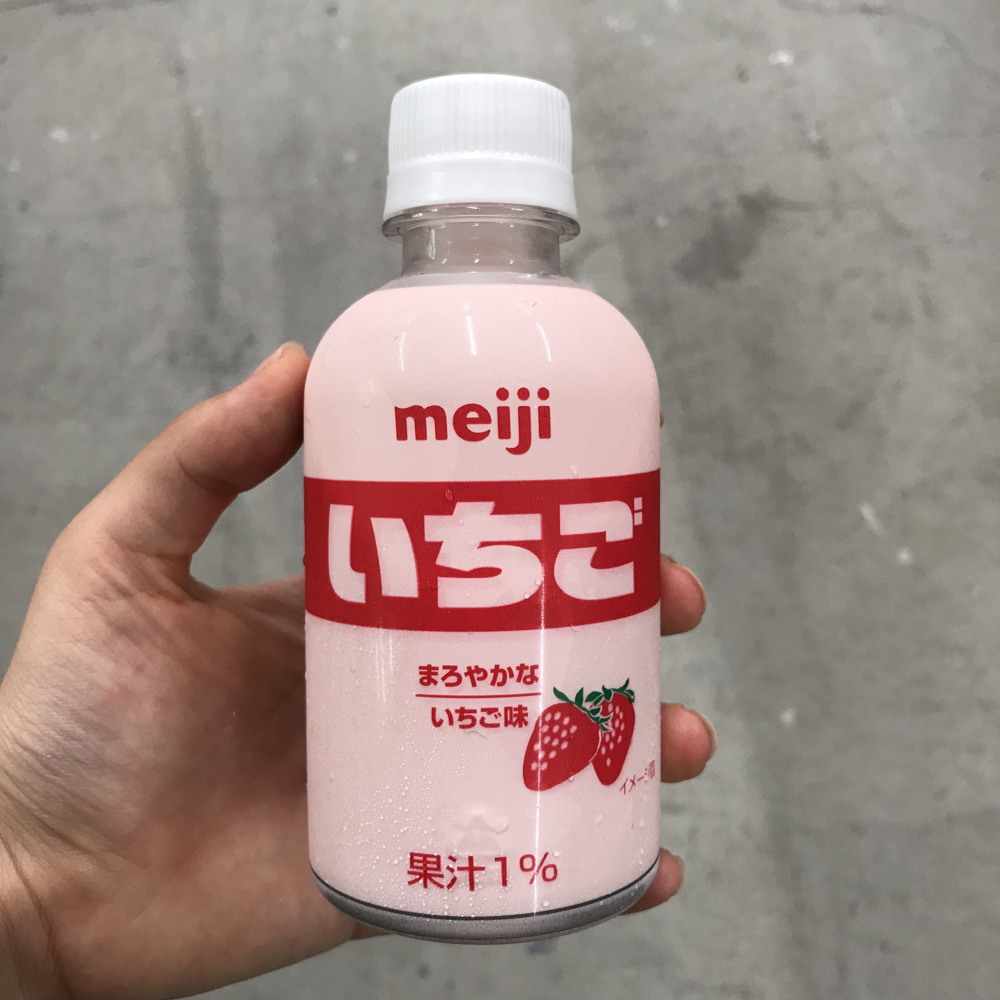
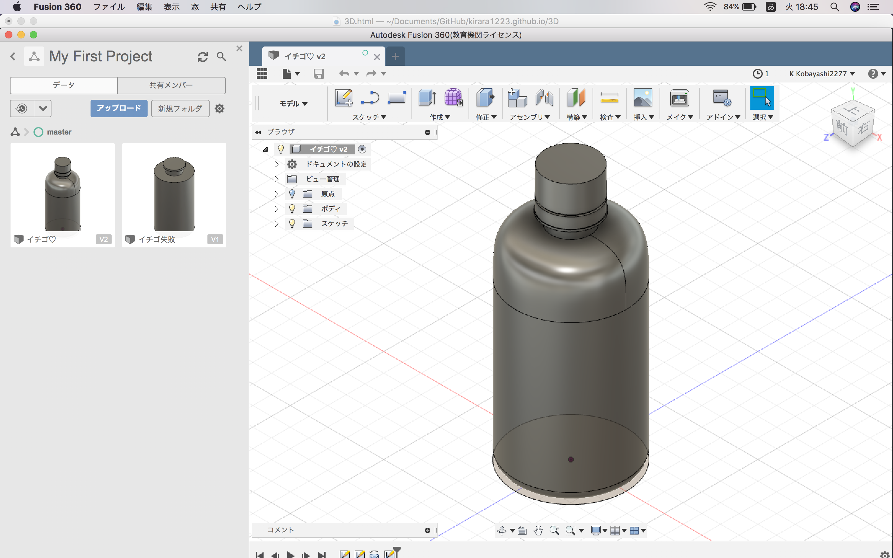

3Dモデル
 
私はいちごオレのペットボトルを題材にして３Dモデルを作りました。
まず初めにペットボトルの長さを測定しました。
直径や高さや幅、リングとキャップの数ミリの隙間まで、細かく調べました。
円柱や長方形や回転、押し出しを主に使ってFusionで作成しました。
ペットボトルのキャップのギザギザを作るのに苦戦して、結局作れないまま終わってしまいました。
ダウンロードできるようにしたかったけど、やり方がわからなくてスクリーンショットになってしまいましたすみません。